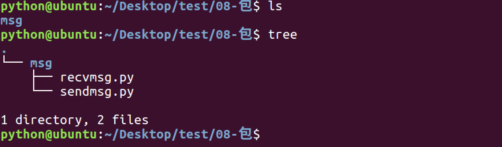
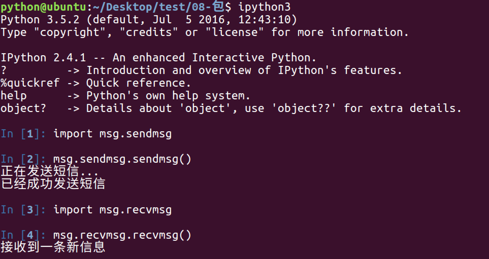
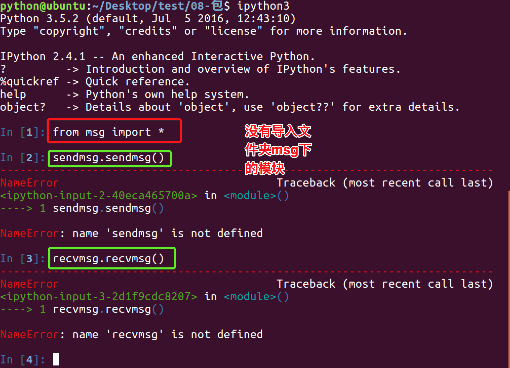
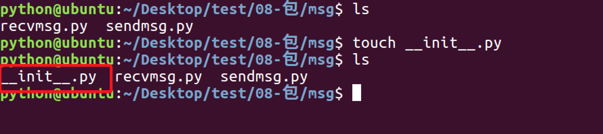
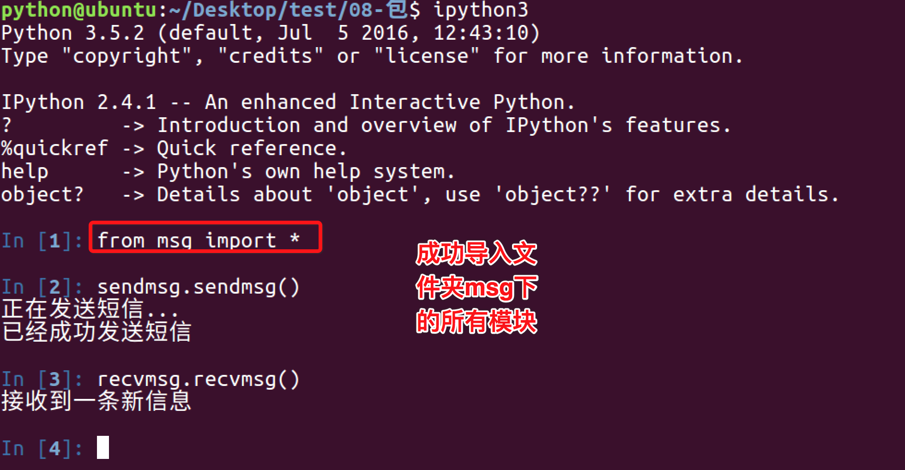
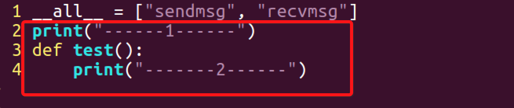
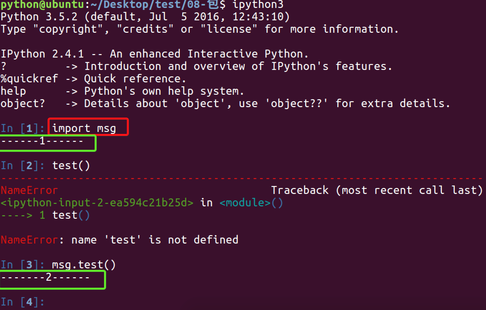

python中的包
引入包
1.1 有2个模块功能有些联系
1.2 所以将其放到同一个文件夹下

1.3 使用import 文件.模块 的方式导入

1.4 使用from 文件夹 import 模块 的方式导入

1.5 在msg文件夹下创建__init__.py文件

1.6 在__init__.py文件中写入
1.7 重新使用from 文件夹 import 模块 的方式导入

总结：
- 包将有联系的模块组织在一起，即放到同一个文件夹下，并且在这个文件夹创建一个名字为
__init__.py文件，那么这个文件夹就称之为包 - 有效避免模块名称冲突问题，让应用组织结构更加清晰
__init__.py文件有什么用
__init__.py控制着包的导入行为
__init__.py为空
仅仅是把这个包导入，不会导入包中的模块
__all__
在__init__.py文件中，定义一个__all__变量，它控制着 from 包名 import *时导入的模块
(了解)可以在__init__.py文件中编写内容
可以在这个文件中编写语句，当导入时，这些语句就会被执行
__init__.py文件

扩展：嵌套的包
假定我们的包的例子有如下的目录结构：
Phone/
__init__.py
common_util.py
Voicedta/
__init__.py
Pots.py
Isdn.py
Fax/
__init__.py
G3.py
Mobile/
__init__.py
Analog.py
igital.py
Pager/
__init__.py
Numeric.py
Phone 是最顶层的包，Voicedta 等是它的子包。 我们可以这样导入子包：
import Phone.Mobile.Analog
Phone.Mobile.Analog.dial()
你也可使用 from-import 实现不同需求的导入
第一种方法是只导入顶层的子包，然后使用属性/点操作符向下引用子包树：
from Phone import Mobile
Mobile.Analog.dial('555-1212')
此外，我们可以还引用更多的子包：
from Phone.Mobile import Analog
Analog.dial('555-1212')
事实上，你可以一直沿子包的树状结构导入：
from Phone.Mobile.Analog import dial
dial('555-1212')
在我们上边的目录结构中，我们可以发现很多的__init__.py文件。这些是初始化模块，from-import 语句导入子包时需要用到它。 如果没有用到，他们可以是空文件。
包同样支持 from-import all 语句：
from package.module import *
然而，这样的语句会导入哪些文件取决于操作系统的文件系统。所以我们在__init__.py中加入__all__变量。该变量包含执行这样的语句时应该导入的模块的名字。它由一个模块名字符串列表组成.。